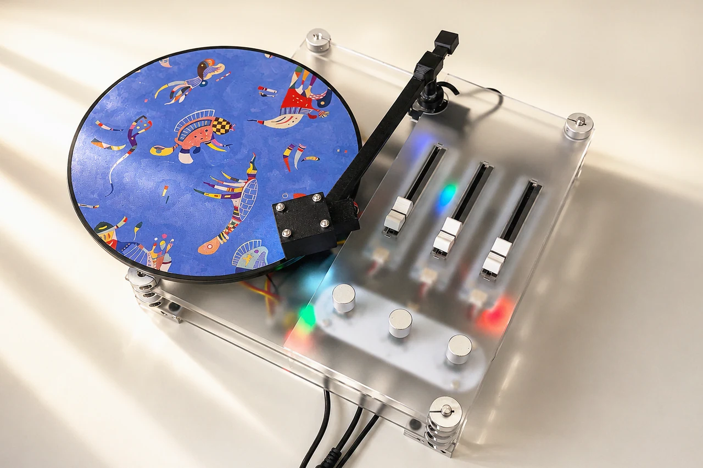
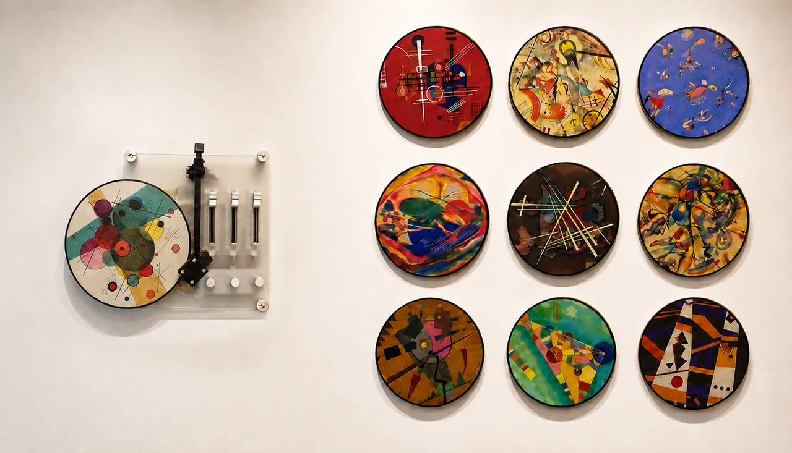
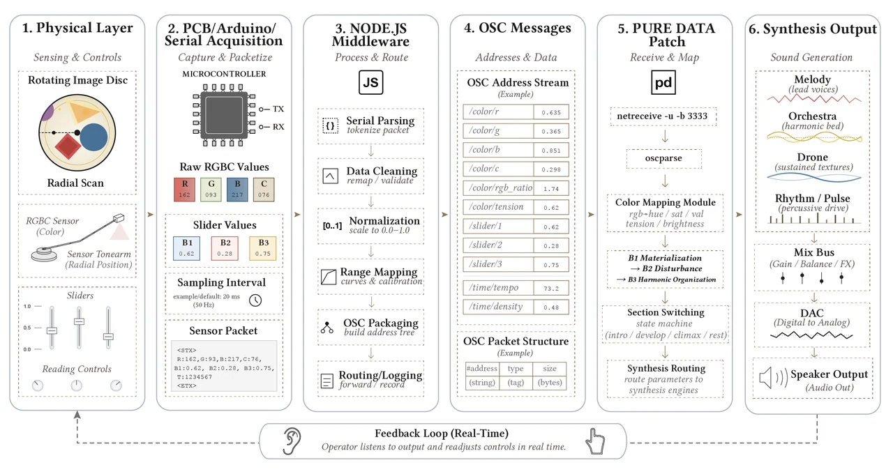
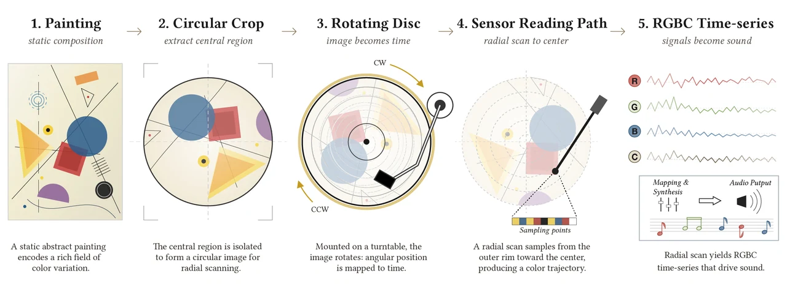
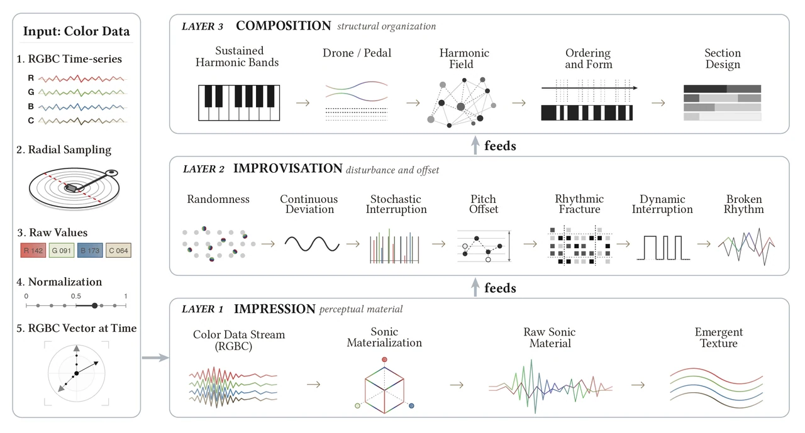
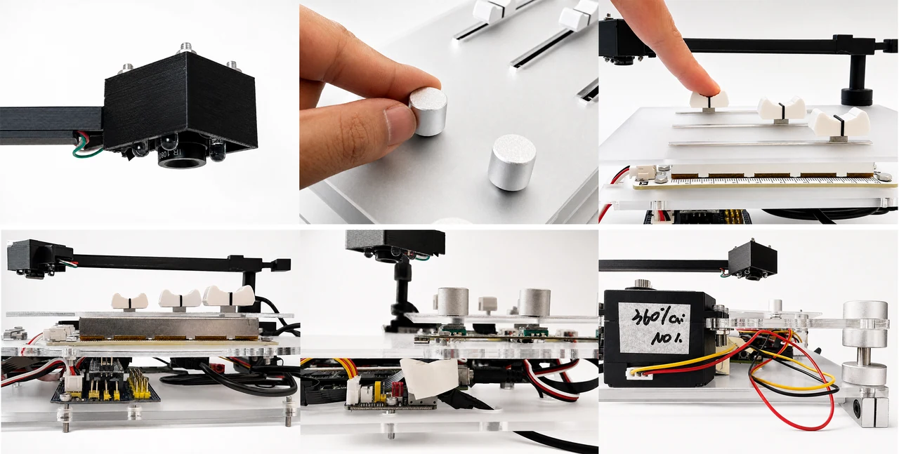
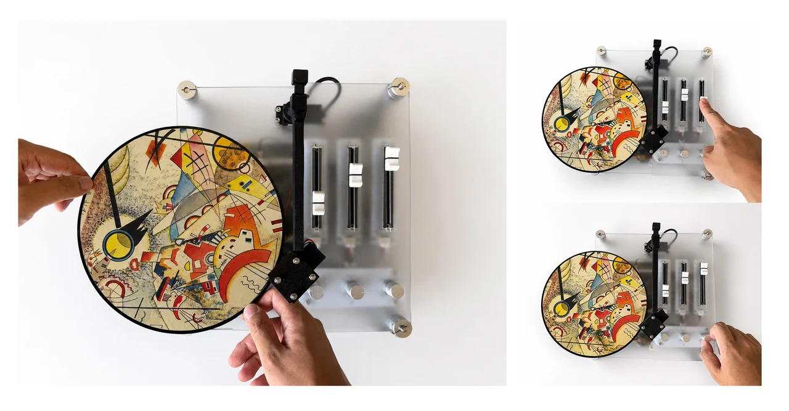
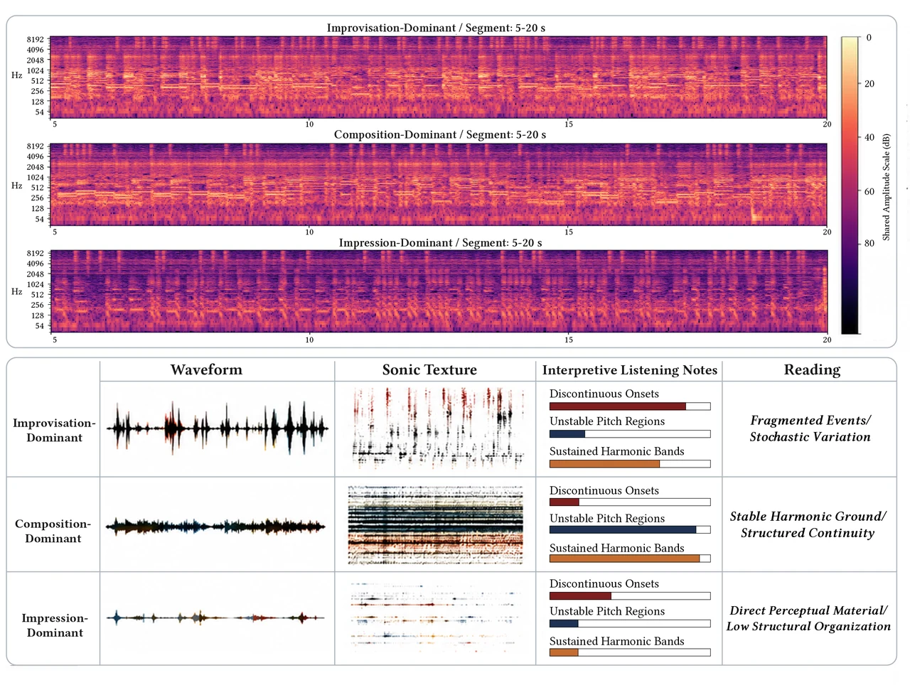
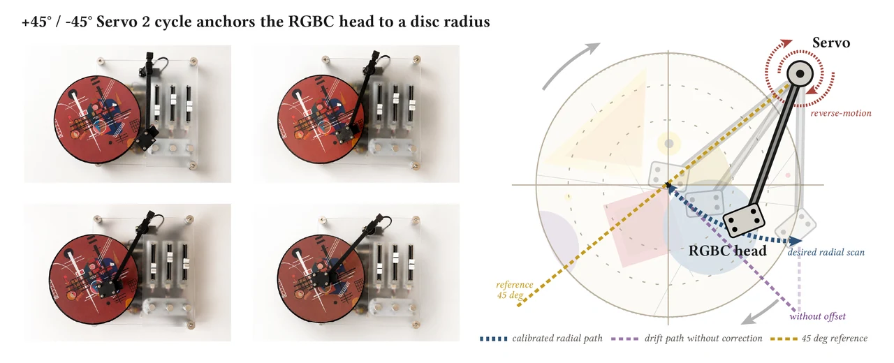

INT–β:
Theory as Apparatus
Instructor: Kang ZhangPersonal Project
Tools & Technologies: RGBC color sensor, Arduino-based custom PCB, Node.js, OSC, Pure Data, servo motors, rotary encoders, slide potentiometers, real-time sound synthesis
Introduction
Theory as Apparatus is an interactive sound installation that transforms Wassily Kandinsky’s theory of artistic formation into a playable physical system.
A Kandinsky painting is cropped into a circular disc and placed on a rotating turntable. As the disc moves beneath an RGBC color sensor, its colors are continuously translated into sound. Rather than treating color and sound as a fixed one-to-one correspondence, the system organizes this translation through three interconnected stages—Impression, Improvisation, and Composition.
Through knobs, sliders, rotation, sensing, and listening, the user does not simply hear a painting. They physically operate the theory through which the painting becomes sound.
The original system converts the rotating painting into a continuous RGBC time series, processed through Node.js and OSC before entering a Pure Data synthesis system.

Concept
Kandinsky described artistic formation as a movement from external perception, through internal impulse, toward deliberate organization.
In this project, these ideas are no longer treated only as concepts to be read.
They become physical rules that determine how the apparatus behaves.
Impression allows sensed color to become audible.
Improvisation disturbs that material through randomness, interruption, and instability.
Composition gathers the disturbed sound into a more sustained musical structure.
Each stage depends on what the previous stage has already produced. The user therefore encounters Kandinsky’s theory not through explanation, but through action and listening.
Instead of asking:
“What musical note corresponds to blue?”
the project asks:
“What happens when a theory of artistic formation becomes something that can be touched, adjusted, and heard?”

System
Painting → Rotating Disc
A Kandinsky image is cropped into a circular format and mounted on a rotating turntable.Rotation transforms the painting from a static spatial composition into a temporal sequence: colors that once existed simultaneously now arrive one after another beneath the sensor.
Sensing
An RGBC sensor mounted on a servo-driven tonearm continuously reads red, green, blue, and clear-channel values from the rotating surface.
The radial position of the sensor determines which region of the painting is sampled, allowing different paths through the same image to generate different sonic material.
Reading Controls
Three rotary controls determine how the painting is read:
- rotation speed → controls the pace of color events
- scanning radius → selects which color ring is sensed
- sampling frequency → controls the resolution of the reading
These controls alter the conditions of perception before the sound itself is formed.
Formation Controls
Three sliders transform the sensed color through Kandinsky’s three stages:
- Impression → color becomes audible
- Improvisation → sound becomes unstable and fragmented
- Composition → fragments are gathered into harmonic structure
The three controls are intentionally dependent rather than independent. A later layer acts on material produced by the layers before it.
From Painting to Sound
The system follows a continuous chain:
Painting → Rotation → RGBC sensing → Node.js processing → OSC → Pure Data → Sound
Rather than generating a finished musical interpretation automatically, the apparatus leaves the translation process open to physical manipulation.
The user changes how the painting is read, how its color data is disturbed, and how those disturbances are eventually organized into sound.



Playable Paintings
Each Kandinsky disc becomes a different playable sound source.
The same painting can generate different outcomes depending on:
- rotation speed
- sensor position
- sampling frequency
- Impression level
- Improvisation level
- Composition level
The painting therefore no longer functions only as an image to be viewed.
It becomes material that can be read repeatedly through movement, sensing, and listening.


Final Prototype
The final prototype combines a servo-driven turntable, movable sensing arm, custom electronics, three rotary controls, and three physical sliders into a single tabletop apparatus.
The physical interface resembles familiar instruments such as a record player, mixer, or synthesizer. But these familiar forms gradually reveal a different logic: the controls do not simply manipulate independent sound parameters.
Instead, they expose a sequence of dependencies.
During studio demonstrations, participants initially often interpreted the sliders as independent mixer channels, then gradually noticed that later layers changed material produced by earlier ones.
The apparatus turns theory from something interpreted intellectually into something encountered physically.


Reflection
- Transforms art theory from a reference into an operating system
- Moves color-to-sound translation beyond fixed one-to-one mapping
- Makes dependency itself a material of interaction
- Turns a static painting into a temporal and performable object
- Allows users to understand theoretical relationships through physical operation
- Explores how interpretation can become something the body can test, hear, and revise